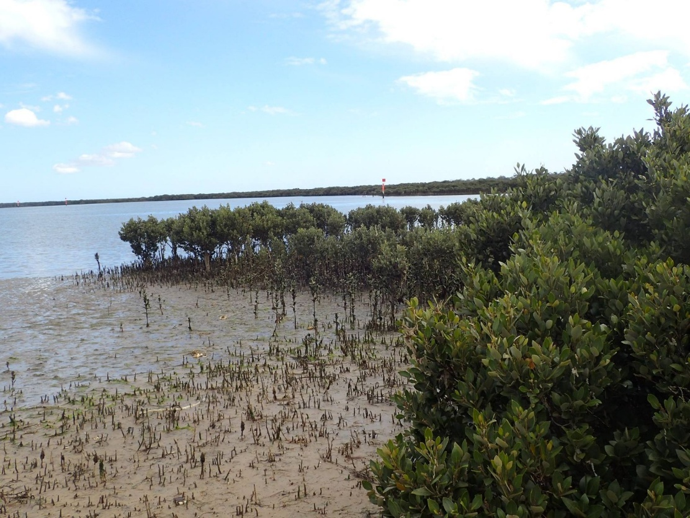

Ecosystem Services Modeling: Blue Carbon
At the USGS Western Geographic Science Center, I modeled how sea level rise impacts ecosystem services provided by marshes and tidal forested wetlands of the Pacific Northwest. Focusing on soil carbon, I used GIS and soil models to project changes in carbon sequestration, informing the Billy Frank Jr. Nisqually National Wildlife Refuge's climate adaptation plans.
I also modeled blue carbon sequestration in marine ecosystems of Victoria, Australia as part of a joint postdoctoral position with Deakin University and UC Santa Cruz. The resulting maps are being used by the Victorian government to prioritize areas for habitat conservation and marine spatial planning.
Explore Mapping Ocean Wealth